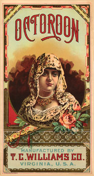

Old Time Racial Terms & More
People of Color
Contributed
by Frederick K. Smoot

Collection, Frederick K. Smoot
|
Often in the old deeds, we see a
person sold, but without reference to their race.
The assumption is that the person was Black. While this is probably
a fair assumption, we must not overlook the possibility
the slave could also be part White, part Indian, or both. In the Carolinas prior to
1717, enslavement of Indians (Yamasee and others)
was done regularly.
The terms Negro, Black, African, Slaves, and Black African are the
words we find in the old censuses, documents, literature, letters, and common American speech. It would seem
that the terms African American and Afro-American are more modern constructions.
Amerindian and Native American are also more modern constructions.
The term Indian is the old form, some say it derived from the fact that Columbus was eight thousand mile off in his
mathematical calculations and thought he was in East Indies.
There are many words in America’s history and the history of the Americas
that have been used to identify, disguise, categorize, control, or to segregate People of Color.
Here are some of those words.
Black Dutch :
Probably, originally White Europeans with pure black
features (hair). This term has also been applied to persons with mixed racial heritage. This term may
have had different meanings to different people. It also may have been used by some to disguise their racial
heritage. There is no
definitive answer to the question of “who are the Black Dutch?”
Blood Quantum :
This term is used to identify the percentage or quantity of
Indian Blood that a person has. Today, in order to qualify for tribal membership in certain tribes, especially
the federally recognized tribes, there are Blood Quantum requirements. The Blood Quantum requirements
vary from tribe to tribe.
Breed, Breeds :
This term is applied mainly to Indians of mixed blood. See Half Breed.
Californios :
A term applied to the first wave of Spanish explorers, priests, and
soldiers who came to California in 1769 and later. In that vanguard, the soldiers were the ones most likely to have mixed
blood, i.e., Mexican Indian, and potentially a small amount of Sepharic Jew, crypto-Moor, or even Gypsy blood.
Californios refers to both a people and a culture. Today, descendents of the those early Californios proudly
claim their heritage.
Free Issue, Free Issue Negro :
A Negro or mixed-race person free by manumission or birth;
especially the child of a White woman and a Negro man. Commonly used in Virginia and the Carolinas.
Free Man of Color (F.M.C.), Free Person(s) of Color, Free Woman of
Color (F.W.C.), etc. (Used especially in Louisiana. Seen on some US Censuses.) :
A person with mixed ancestry, not a slave, often a mixture of Negro and
White, i.e., mulatto, quadroon, or octoroon.
A darker skinned person, not a slave and not considered Negro,
usually of Mediterranean, near east, East Indian, or Asian origins.
Also applied to Native Americans.
Free Mixture :
Probably a person, not a slave, being part Black, and being part
White and/or Indian.
Griff, Griffe, Griffane, Griffin :
Offspring of a White and a Black. Used especially in Louisiana.
Half and Half :
A person of mixed blood; a half breed. Part Indian or part Black.
Half Breed, Half Blood, Half Blooded :
The child of an Indian and a White parent. May be applied to people
who are part Black.
High Yellow (often pronounced, high yalla or high yaller):
A light-skinned Negro person. As some say, “mostly White.”
Marabou :
A person having five eighths Negro blood; the offspring of a mulatto
and a griffe. Usage found in Louisiana.
Maroon :
For our purposes, a fugitive or runaway slave, one who joined with the
Seminole in Florida. Earlier, this word was applied to fugitive Negro slaves in the West Indies and Dutch
Guiana. Interestingly, the word origins of Maroon in this usage is from certain Spanish words: symeron, >
cimarron, > cimarrón, meaning wild, free, a runaway person. It is possible that the term maroon may have
been misapplied as a color. Maroon is a very dark brownish-red or chestnut color.
Marranos :
Sephardic Jews (Jews of Spain and Portugal) who went through a
conversion process (usually forced or by necessity) to Catholicism during the Spanish/Portuguese Inquisition and
so became conversos, a.k.a., Marranos. Many of these people fled the Inquisition by coming to the colonial
Americas, especially Mexico and southward. They would have come as sailors, soldiers, and settlers. Today, we would
expect to find descendants in the American southwest.
Some Sephardic Jews came to British colonial America,
but in fewer numbers; these people often would flee to France or England and then
sail the America’s east coast.
Melungeon :
A person of mixed racial heritage. Common usage in East Tennessee.
From the latest DNA
study (20 June 2002) by Dr. Kevin
Jones, a biologist at the University of Virginia’s College at Wise, as reported by the
Melungeon Heritage Association: “While the Melungeons are predominantly European in
their genetic backgrounds,
they are indeed tri-racial. ‘The[re] appears to be a small percentage of both Native
American and African-American sequences in there, too,’ Jones stated, ‘although
they are certainly both in the minority . . .’ ” Additionally the report stated,
“New questions have been raised, however, concerning females potentially from Turkey and
northern India who are a part of the Melungeon ancestry.”
Dr. Donald Panther-Yates of Georgia Southern University posted
his response to
the recent Jones DNA study to RootsWeb’s AMERIND-US-SE mailing list. Here is part of that response:
As for the point about why study mDNA if they
were all male founders, Jones and Kennedy did discover one interesting
finding by studying the female lines: there was a small contribution
of Siddi or Roma (Gypsy). This was interpreted to
indicate that the Melungeon base population came over to this country
already in family units! I believe they drew the right
conclusion but missed the ethnicity of those family units--they were
Sephardic Jewish. Only medieval Spain unified all the
strains that are emerging as “Melungeon”--Moorish, Arabic,
Turkish, Portuguese, Jewish, Gypsy (they came
with the Moslem conquerors from Iran), Spanish, Morrocan, etc. Only the
expulsion of the Jews in 1492 and later can adequately
explain the movements and reassembly of “Melungeons.” Only
Judaism can provide motivation and “Occam’s
razor” (simplest explanation) for cousin marriage and secrecy,
generation after generation.
Mestizo :
(From Webster’s Dictionary)
1. a person of mixed blood. 2. (in Spanish America) a person
of Spanish and Amerindian blood. 3. a person of European and East
Indian blood. 4. a person who is of Philippine and foreign ancestry. Also referring to a
woman, mestiza.
Moriscos :
Muslims (of Spain) who went through a conversion process
(usually forced or by necessity) to Catholicism during the Spanish Inquisition and so became
conversos, a.k.a., Moriscos. These people are the descendants of the Moors who
invaded Spain in 711 A.D.
Like the Marranos, the Moriscos are part of the great
melting pot of the Americas.
Mulatto :
A person who is one-half Negro, one-half White. The child of
one White parent and one Negro parent. From the Spanish and Portuguese word mulato meaning young mule.
The mule is of course, one half horse and one half donkey, a hybrid. In Brazil, the term Cafuzo is
used to describe a half Indian, half Negro person.
Negra, Nigra, Niggra :
(From Dictionary of American Regional English, Vol III)
A Black Person.
Editors Note :
It may be possible that the term Nigra started because of the southern
speech pattern (southern drawl) where Negro is pronounced Nigruh, however it has the flavor of being
feminine, in the way Spanish use the “a” as a word ending to imply the feminine. Today this is considered a
derogatory term. If a White southerner said, “It is the White man’s duty to take care of the
Nigras” the demeaning qualities of that statement are apparent.
Negro, nager, neeger, negra, nig, nigro, &c. :
Negro, a Spanish word meaning black. There are a number of early variant spellings
of Negro. From John Smith’s General History of Virginia, 1624. “About
the last of August came in a dutch man of warre that sold vs twenty negars.” --
and so started the slave trade in British America.
Octoroon, (also mestee, mustee) :
A person who is one-eighth Negro, seven-eighths White. The child of one
White parent and a quadroon. From the Latin word octo meaning eight.
Quadroon, Quarteron :
A person who is one-quarter Negro, three-quarters White. The child of one
White parent and a mulatto. From the Latin quartus; >Spanish cuarto meaning
fourth.
Sacatra :
The name given to the offspring of a griffe and a negress. (negress: a
Negro woman or girl) Louisiana.
Quinteron :
A person who is one-sixteenth Negro, fifteen-sixteenths White. The child of one
White parent and a Quadroon.
Zambo :
A person who is three-quarters Negro, one-quarter White. The child of
a mulatto and a Negro; also, the child of an Indian and a Negro.
|
|